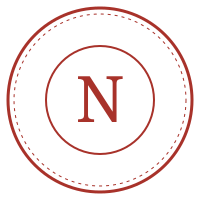

Nothing up our sleeve.
چیزی پشت پرده نیست.
ابزاری که قرار است تو را از دست ناظر آزاد کند، خودش نباید ناظر تازهای باشد. این صفحه دقیقاً میگوید هر بخش نیکا نت چه چیزی میبیند، چه چیزی نگه میدارد، و چطور خودت میتوانی راستیآزمایی کنی.
A tool meant to free you from one watcher must never become another. This page states exactly what each part of Nika Net sees, what it keeps, and how you can verify it yourself.
هفت چیزی که هرگز نمیکنیم
Seven things we will never do
- ترافیک تو را نمیبینیم. پنل روی حساب Cloudflare خودت اجرا میشود؛ ما نه کلیدی داریم، نه دسترسیای، نه لاگی.
- We don’t see your traffic. The panel runs on your own Cloudflare account — we hold no key, no access, no log.
- سرور مرکزی نداریم. هیچ نقطهای وجود ندارد که همهٔ کاربران از آن عبور کنند یا بشود آن را خاموش کرد.
- There is no central server. No single point every user passes through, and none that can be switched off.
- ردیاب و تبلیغ نداریم. نه Google Analytics، نه پیکسل، نه فونت از سرور بیرونی. همهٔ فایلهای سایت از همین دامنه میآید.
- No trackers, no ads. No Google Analytics, no pixels, no third-party fonts. Every file on this site is served from this domain.
- حساب کاربری نمیسازیم. سایت و ربات از تو ایمیل یا شماره نمیخواهند. صندوق پیشنهادات بدون نام هم کار میکند.
- We don’t create accounts. The site and bot never ask for an email or phone. The suggestion box works anonymously.
- آیپی خام ذخیره نمیکنیم. تنها جایی که به آیپی نگاه میشود، محدودکنندهٔ اسپم صندوق است — و همانجا فقط یک هش کوتاهشدهٔ برگشتناپذیر نگه داشته میشود.
- We don’t store raw IPs. The only place an IP is looked at is the suggestion-box rate limiter — and even there only a truncated, irreversible hash is kept.
- در خفا بهروزرسانی نمیکنیم. هر نسخه یک کامیت عمومی است؛ پنل فقط وقتی بهروز میشود که خودت دکمه را بزنی.
- No silent updates. Every release is a public commit; the panel updates only when you press the button.
- هیچوقت پولی نمیشویم. MIT، متنباز، رایگان. اگر روزی کسی «نیکا نت پریمیوم» فروخت، ما نیستیم.
- We will never charge. MIT, open source, free. If someone ever sells “Nika Net Premium”, it isn’t us.

دفتر دادهها — بخش به بخش
The data ledger — part by part
هر سطر یک جزء نیکا نت است، چیزی که از نظر فنی میبیند، و چیزی که واقعاً نگه میدارد.
Each row is one component, what it technically sees, and what it actually keeps.
| جزء | Component | کجا اجرا میشود | Runs where | میبیند | Sees | نگه میدارد | Keeps |
|---|---|---|---|---|---|---|---|
| سایت nikanet.dpdns.org | This website | GitHub Pages + Cloudflare CDN | درخواستهای HTTP معمولی (لاگهای استاندارد میزبان) | Ordinary HTTP requests (host’s standard logs) | nothing by us — فقط تنظیمات زبان/تم در localStorage مرورگر خودت— only your language/theme in your own browser’s localStorage | ||
| پنل (Worker خودت) | The panel (your Worker) | حساب Cloudflare خودت | Your own Cloudflare account | ترافیک کاربران تو — فقط توسط تو | Your users’ traffic — visible only to you | you decide — کاربران، سهمیه و تنظیمات در KV/D1 خودت— users, quotas and settings in your own KV/D1 | |
| ربات @NikaNetLauncher_bot | @NikaNetLauncher_bot | Cloudflare Worker | شناسهٔ تلگرام و پیامهایی که به ربات میفرستی | Your Telegram ID and the messages you send it | minimal — شناسهٔ چت برای پاسخدادن؛ توکن Cloudflare فقط در طول جلسهٔ استقرار— chat ID to reply; your Cloudflare token only during the deploy session | ||
| صندوق پیشنهادات | Suggestion box | Cloudflare Worker + KV | متن پیام، نام اختیاری، آیپی (برای محدودیت اسپم) | Message text, optional name, IP (for rate limiting) | hashed — متن و نام؛ از آیپی فقط ۸ بایت اول SHA-256 برای شمارش و جلوگیری از رأی تکراری— text and name; of the IP only the first 8 bytes of a SHA-256 for counting and vote dedupe | ||
| دموی زنده | Live demo | Cloudflare Worker + KV | کلیکهای داخل دمو | Clicks inside the sandbox | resets daily — دادههای ساختگی؛ هر ۲۴ ساعت پاک میشود— fake data; wiped every 24 h | ||
| بررسی نسخه / انتشارها | Version & release feeds | raw.githubusercontent.com · api.github.com | یک درخواست GET از مرورگر تو به GitHub | One GET from your browser to GitHub | nothing by us — مشمول سیاست GitHub— subject to GitHub’s policy | ||
| سرویسورکر آفلاین | Offline service worker | مرورگر خودت | Your own browser | — | local only — کپی صفحات برای وقتی که اینترنت قطع است— page copies for when the network is down |
به ما اعتماد نکن؛ خودت ببین
Don’t trust us — check
چهار کار ساده که هرکسی میتواند بکند و نیازی به دانش خاصی ندارد.
Four simple checks anyone can do without special knowledge.
همهٔ ورکر در یک مخزن عمومی است. مسیر src/ منطق و dist/worker.js خروجی نهایی است.
The entire Worker lives in one public repo. src/ is the logic, dist/worker.js the final build.
در داشبورد Cloudflare → Workers → Logs. تنها مقصدهای بیرونی باید مقصد کاربرانت و (اگر روشن کردی) بررسی نسخه در GitHub باشند.
Cloudflare dashboard → Workers → Logs. The only outbound destinations should be your users’ targets and (if enabled) the GitHub version check.
در مرورگر F12 → Network را باز کن و صفحه را نو کن. هیچ دامنهای جز همین سایت، GitHub و ورکرهای nikanetteem.workers.dev نباید ببینی.
Open F12 → Network and reload. You should see no domain other than this site, GitHub, and the nikanetteem.workers.dev Workers.
هش SHA-256 آخرین dist/worker.js همین حالا در مرورگر تو از GitHub محاسبه میشود. با فایلی که روی ورکرت است مقایسه کن.
The SHA-256 of the latest dist/worker.js is computed in your browser from GitHub right now. Compare it with what’s deployed on your Worker.
از چه چیزی محافظت میکند — و از چه چیزی نه
What it protects against — and what it doesn’t
ترافیک با TLS به لبهٔ Cloudflare میرود و برای اپراتور مثل بازدید از یک سایت معمولی است. محتوا برای واسطهها خوانا نیست.
Traffic reaches Cloudflare’s edge over TLS and looks to the ISP like an ordinary website visit. Intermediaries can’t read the contents.
WebSocket روی ۴۴۳ معمول است، اما در روزهای سخت ممکن است کند یا قطع شود. آیپیهای تمیز و WARP کمک میکنند؛ تضمین نمیکنند.
WebSocket on 443 is common, but on harsh days it may slow or drop. Clean IPs and WARP help; they don’t guarantee.
Cloudflare ترافیک را رمزگشایی میکند (این ماهیت CDN است) و سایت مقصد آیپی Cloudflare را میبیند، نه تو را. اگر مدل تهدیدت شامل Cloudflare است، این ابزار برای تو نیست.
Cloudflare terminates TLS (that’s what a CDN is) and the destination sees Cloudflare’s IP, not yours. If Cloudflare is in your threat model, this isn’t the tool for you.
اگر چیزی پیدا کردی
If you find something
آسیبپذیری امنیتی را لطفاً اول خصوصی گزارش کن تا قبل از اعلام عمومی وصله شود. ظرف ۷۲ ساعت پاسخ میدهیم و نامت (اگر بخواهی) در تغییرات ذکر میشود.
Please report security issues privately first so they can be patched before disclosure. We answer within 72 hours and credit you (if you wish) in the changelog.